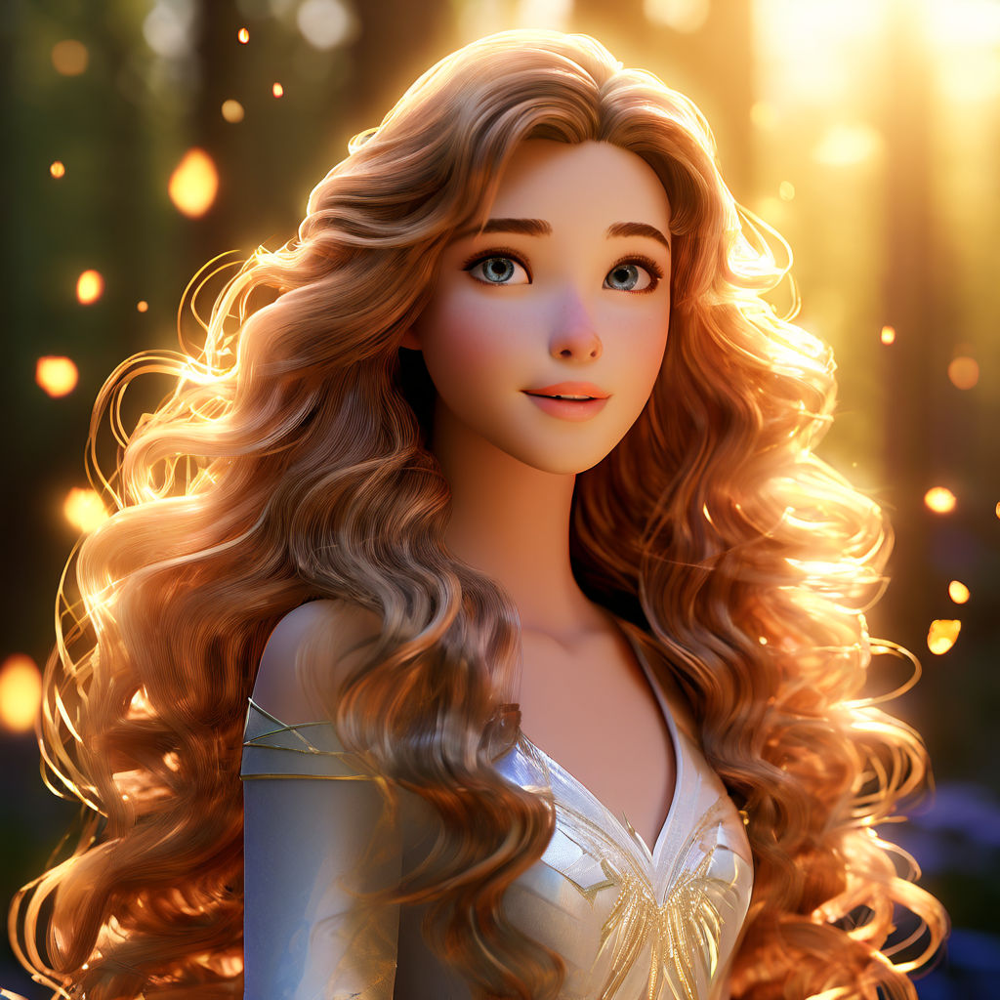
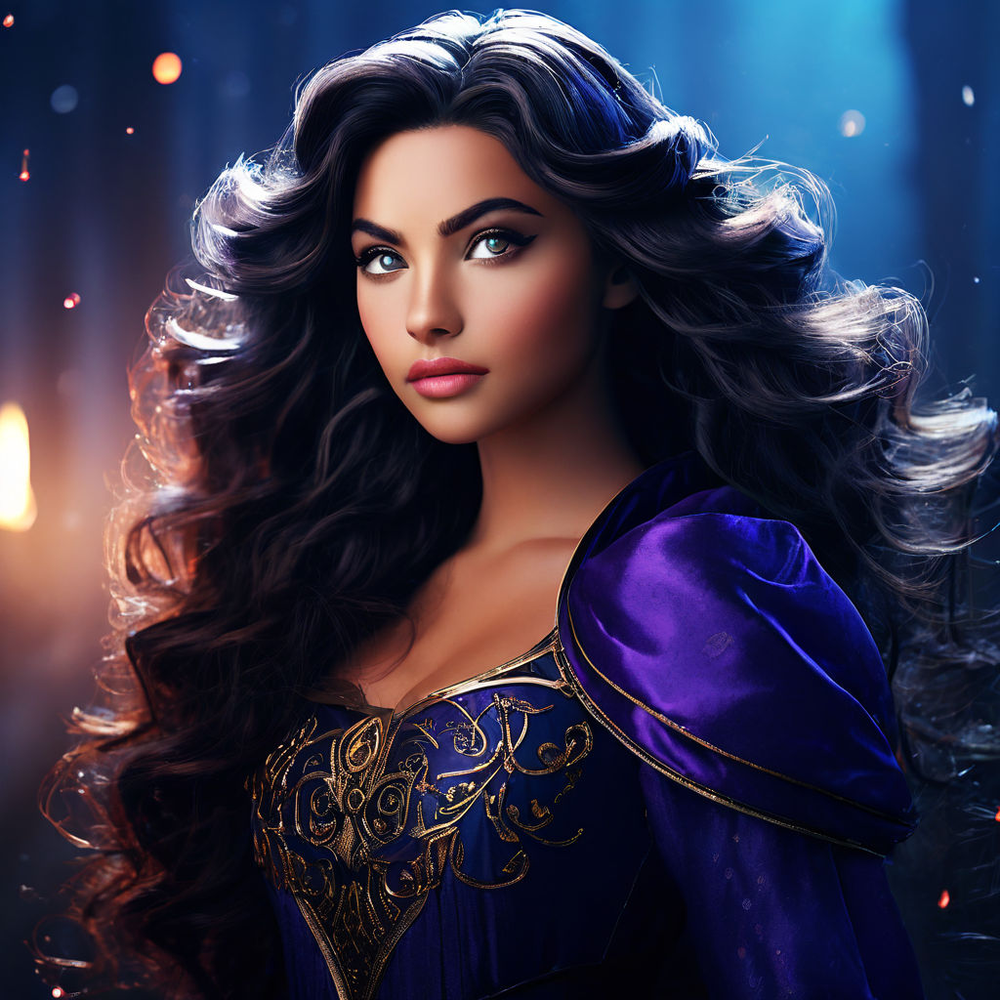
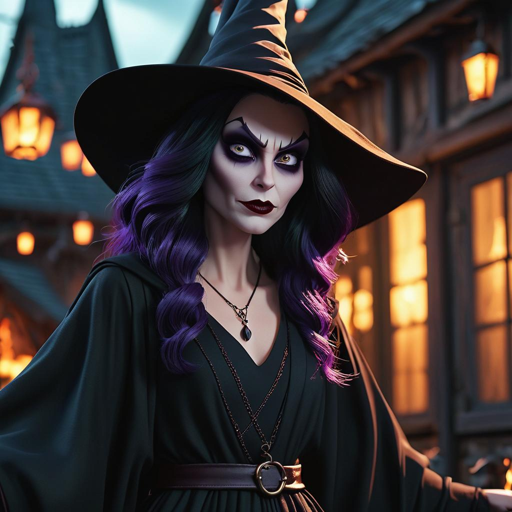
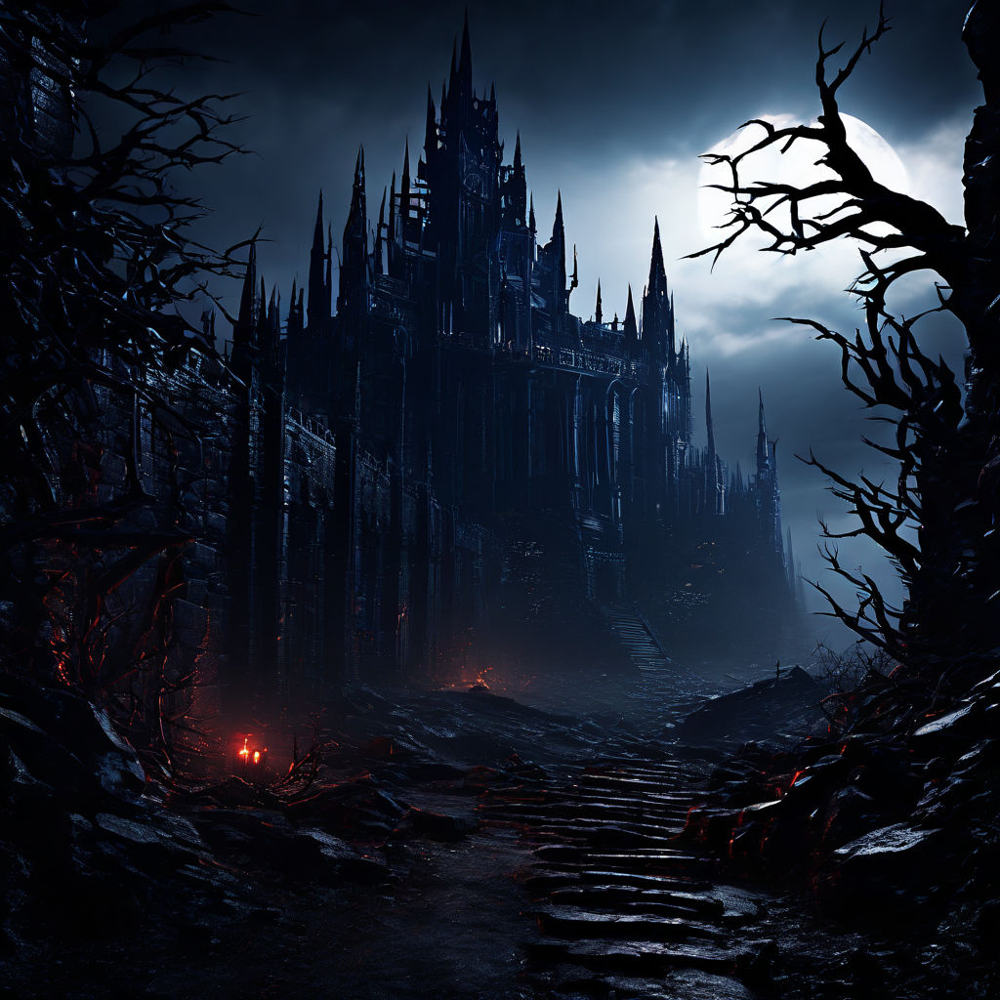
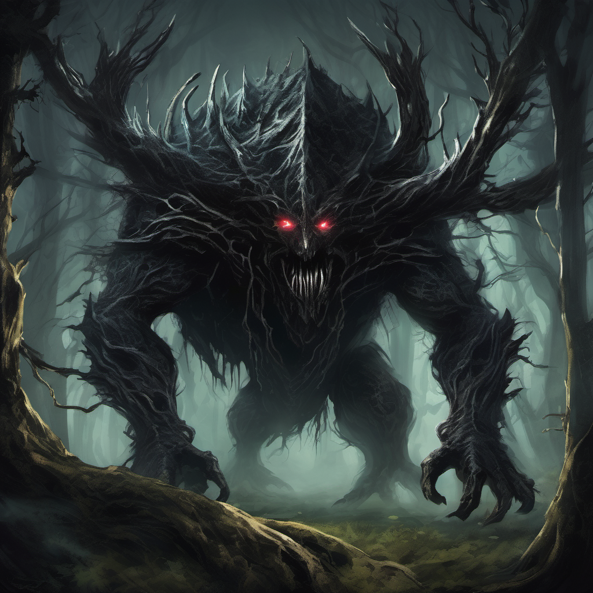
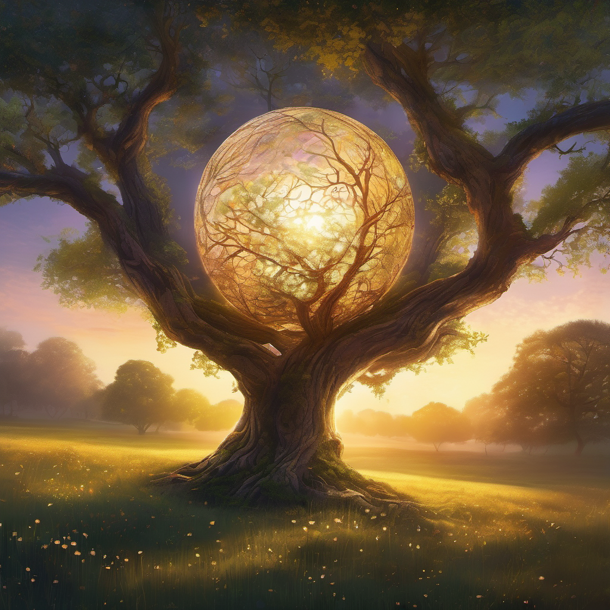

Добре дошли в сайта ми ! Представям ви моята нова история, разкриваща вълшебния свят на Омагьосаната гора.
В сърцето на Омагьосаната гора две млади момичета, Аврора и Луна, тръгват на пътешествие, изпълнено с магия, приятелство и приключения. Техният идиличен живот е разбит, когато тъмната магьосница Мег отвлича Аврора, хвърляйки Луна в отчаяна мисия да спаси приятелката си. Луна смело прекосява Омагьосаната гора, изправяйки се пред различни предизвикателства и привличайки помощта на мистични същества по пътя си. В крайна сметка тя се изправя срещу Мег в нейната Тъмна крепост, където започва ожесточена битка. Със силата на приятелството и любовта Луна побеждава Мег и спасява Аврора, възстановявайки мира в гората. Победата им обаче е кратка, тъй като Мег се завръща, търсейки отмъщение. Въоръжени с новооткрити знания и напътствията на мъдри пазители, Аврора и Луна пътуват по-дълбоко в гората, срещат предизвикателства, създават си съюзници и в крайна сметка отново се изправят срещу Мег След като Мег е победена и мирът е възстановен, Аврора и Луна продължават своите приключения, изследвайки чудесата на Омагьосаната гора и изправяйки се пред всякакви предизвикателства, които бъдещето може да поднесе, сигурни в знанието, че стига да стоят заедно, те могат да преодолеят всичко.
.png)
Героите от историята:
| - | Аврора | Луна | Злата магюосница Мег |
| - |  |  |  |
| Визуално описание | Аврора е олицетворение на изобретателната красота, с коса, която свети като злато, приемайки в себе си слънчевата светлина и разпръскващо топъл блясък около нея. Очите й са сияйно сини, като звездите на ясно лятно небе, светещи с доброта и вълнение, привличайки всички около себе си с тяхната благополучна светлина. Нейната поява е висока и изящна, движеща се с лекота, която изглежда да плава във въздуха. Облечена в текстилни дрехи с деликатни цветя, които съвпадат с красотата на гората, тя излъчва топлина и уют. Нейната светла и мека кожа отразява нежния ѝ дух и прави всички около нея да се чувстват уютно и защитени. | Луна е загадъчна и обаятелна, с коса тъмна като полунощ, касаеща силно вълните около нея. Очите ѝ са дълбоко, пленително лилави, светещи с магическа светлина, която изглежда да държи тайните на вселената. Въпреки че е средно висока, в движенията й има тиха сила, еластична грация, която говори за скрита мощ. Нейната кожа е бледа и светеща, като че ли е докосната от лунна светлина, давайки й едно необикновено аура, която ви привлича и ви кара да искате да научите повече. | Мег е като зловеща сянка, която се издига сред мрака. С тъмна коса и пронизващ поглед, тя излъчва студена злоба и мощ. Висока и силна, тя се вплита в сенките като ужасяващо същество от митологичния свят. Нейната кожа, бледа и безжизнена, като на мъртвец, сама по себе си е предупреждение за опасност. |
| Характер | Аврора е воплъщение на красотата и доброто в света. Тя е изключително милостива и справедлива, винаги се стреми към хармония и мир. Сърцето й е пълно с нежност и състрадание към всички същества, а нейната присъствена усмивка разпръсква светлина и радост на всички около нея. Аврора е смела и решителна, готова да защити своите близки и да се изправи срещу злото, но винаги се стреми към мирно решение и примирение. Нейната красота не е само външна, но и вътрешна, защото тя притежава чисто сърце и благороден дух. | Луна е обгърната от мистерия и тайни, като тя притежава внушителна интелектуална сила и дълбока мъдрост, която я прави важна фигура в света на вълшебството. Тя е тиха и сдържана, но в същото време излъчва изключителна сила и увереност. Луна е деликатна и внимателна към другите, но също така може да бъде борбена и решителна, когато защитава своите ценности и убеждения. Нейната връзка с природата е дълбока и свещена, като тя се стреми да запази равновесието и хармонията в света около нея. | Мег е владетелка на мрака и злото. Тя е изключително умна и хитра, използваща всяка възможност да постигне своите цели. Мег не се притеснява да използва зловеща магия и предателство, за да постигне властта си и да унищожи всички, които й стоят на пътя. Тя е лидер на злите сили, която се стреми към пълно превземане на света и установяване на тирания. Нейната воля е необуздана, а жаждата й за власт е неутолима, като тя е готова на всичко, за да постигне своите цели. |
| Генерирано изображение с : | Playground AI | Playground AI | Gencraft |
Места от историята:
| - | Омагьосаната гора | Тъмната крепост | Свещената горичка |
| - | 
|
 | |
| Описание на мястото | Влезте в свят на древна магия и вечна красота, където високи дървета се издигат към небето и шепотът им разкрива тайни на вятъра. Гората на вълшебството е място на зашеметяваща красота, с пищна зеленина и ярки цветя, които покриват пейзажа в мозайка от цветове. Кристално чисти потоци се извиват из гората, техните води сияят под слънчевата светлина. Мистични същества свободно се разхождат сред дърветата, от мъдри стари сови до игриви феи и величествени еднорози. Но сред красотата на гората се крие осязаемо усещане за мистерия и опасност, докато тъмни сенки танцуват под короната и скрити опасности очакват невнимателния пътешественик. | Крепостта на тъмнината и отчаянието се издига като зловещ призрак на хоризонта, черните й каменни стени се издигат като кошмарите. Тръни обвиват стените й и светят под лунната светлина. В сенчестите й зали се крият тъмни същества и извратени капани, готови да засадят всеки, който смее да влезе вътре. Въздухът е тежък от миризмата на отчаяние, а единственото звуково изпъкване нарушаващо мълчанието е ехото на смеха на вещицата, която нарича тази крепост свой дом. | Скритата свещена горичка е място на древна мощ и мъдрост. Въздухът шуми с магия, докато влизате в гробището, чувствата ви треперят от нетърпение. В центъра му стои Дървото на вековете, клоните му се издигат към небето като протегнати ръце. Казва се, че дървото държи спомените и знанията на всички, които са минали, а присъствието му изпълва гробището с усещане за спокойствие и почит. Тук, сред нежния шум на листата и мекото поклащане на вятъра, може да откриете отговори на най-дълбоките загадки на гората и да разкриете тайните на миналото. |
| Генерирано изображение с : | Gencraft | Playground AI | Gencraft |
Второстепенни образи от историята:
| - | Създанието на Мег | Селестия | Свещеното кълбо |
| - |  |  | |
| Участва в : | РАЗВРЪЗКА | РАЗВРЪЗКА | ЗАКЛЮЧЕНИЕ |
| Генерирано изображение с : | PIXLR | PIXLR | PIXLR |
Аврора и Луна: Пазителите на омагьосаната гора
В сърцето на Омагьосаната гора, където вековните дървета шепнеха тайни на вятъра и въздухът беше изпълнен с ухание на магия, живееше младо момиче на име Аврора. Златната й коса блестеше на пъстрата слънчева светлина, докато танцуваше през гората, а смехът й отекваше като звън на камбани. До нея беше Луна, нейната най-добра приятелка и постоянен спътник, чиято тъмна коса се развяваше като река от мастило и чиито очи блестяха с мистериозна лилава светлина. Заедно Аврора и Луна бродеха из гората, сърцата им бяха изпълнени с любопитство. Те изследваха всеки ъгъл на своя магически дом, от извисяващите се дървета до пенливите потоци, които се виеха през гората. Но любимото им място беше Кристалното езеро, спокоен оазис, скрит дълбоко в сърцето на гората. Eдин ден, Аврора и Луна се приближиха до бреговете на Кристалното езеро, те бяха изпълнени с усещане за мир и спокойствие. Водата блестеше на слънчевата светлина, повърхността й беше гладка като стъкло. Птици пееха по дърветата отгоре, мелодиите им се смесваха в звукова симфония. Но за Аврора и Луна беше неизвестно, че те не бяха сами. От сенките гледаше Мег, магьосница с голяма сила и още по-голяма злоба. Бледата й кожа сякаш светеше в тъмнината, а очите й горяха със студен огън, докато гледаше как двете момичета се приближават. С едно движение на китката си Мег извика въртящ се вихър от тъмна магия, който обгърна Аврора и я отвлече от страната на Луна. Луна извика в шок и ужас, докато гледаше как приятелката й изчезва в тъмнината, сърцето й беше изпълнено със страх и отчаяние. Решена да спаси Аврора от каквато и тъмна съдба да я очаква, Луна тръгна на мисия да намери своя приятел. Тя пътуваше дълбоко в сърцето на Омагьосаната гора, а пътят й беше осветен от слабия блясък на звездите отгоре. Докато Луна навлизаше по-дълбоко в гората, тя се натъкваше на всякакви странни и чудни създания. Тя срещна мъдри стари сови, които споделиха мъдростта си с нея, палави духове, които я подвеждаха, и благородни еднорози, които й предложиха защитата си. Но без значение колко далеч пътува или колко препятствия срещна, Луна никога не изгуби надежда. Защото тя знаеше, че стига да има силата и смелостта да продължи, ще намери начин да спаси приятелката си от лапите на злото. Най-накрая Луна стигна до крепостта на мрака и отчаянието. Крепостта се издигаше пред нея и нейните черни каменни стени се издигаха като кошмари. Бодливи бодли се извиваха и виеха около стените на крепостта и блестяха на лунната светлина. С дълбоко дъх Луна пристъпи напред, сърцето й биеше силно. Тя знаеше, че я очаква битка и беше готова да се изправи пред всякакви опасности, които я очакваха. Вътре в крепостта Луна се натъкна на тъмни същества и усукани капани, всеки по-опасен от предишния. Но тя продължаваше, решителността й беше непоколебима, докато най-накрая стигна до сърцето на крепостта. Там, затворена в клетка с тъмна магия, беше Аврора, очите й бяха изпълнени със страх и отчаяние. Луна се втурна към приятелката си, сърцето й се изпълни с радост и облекчение при вида й, че е в безопасност и невредима. Но събирането им беше краткотрайно, защото Мег изникна от сенките, очите й горяха от омраза и злоба. С махване на ръката си тя извика въртящ се вихър от тъмна енергия, който погълна Луна и Аврора в ледената си хватка. Но Луна отказваше да се предаде. Възползвайки се от силата на приятелството и любовта, тя създаде порой от светлина и магия, освобождавайки се от хватката на Мег и прогонвайки магьосницата обратно в дълбините на мрака, откъдето дойде. С победената Мег и прогонването на тъмнината от Омагьосаната гора, Аврора и Луна бяха свободни да бродят отново. Заедно те танцуваха из гората, а смехът им отекваше като звън на камбани, докато се впускаха в нови приключения и се изправяха пред каквито и предизвикателства да крие бъдещето, сигурни в знанието, че стига да се имат една друга, могат да преодолеят всичко.
Докато се разхождаха из гората, те срещаха както нови приятели, така и врагове. Те помагаха на съществата от гората в момент на нужда, а в замяна получаваха помощ и напътствия в собствените си приключения. Те изследваха скрити пещери, пълни с блестящи кристали, изкачваха планини и намираха себе си в мистериозни руини, отдавна забравени от времето. Но сред радостта и удивлението на техните приключения, винаги имаше заплахата от Мег, тъмната магьосница, която все още таеше омраза и ревност в сърцето си. Въпреки че беше прогонена от Омагьосаната гора, злонамереното й присъствие все още можеше да се усети като сянка, задаваща се на хоризонта. Решени да защитят дома си и да гарантират, че Мег никога повече не може да го застраши, Аврора и Луна се впуснаха в мисията да открият източника на нейната сила и да сложат край на царуването й и на мрака веднъж завинаги. Те пътуваха надлъж и нашир, търсейки древни артефакти и мощни съюзници, които да им помогнат в търсенето. По пътя те се сблъскваха с много изпитания и премеждия, от коварни капани до свирепи чудовища, които пазиха скрити съкровища. Но чрез смелост, решителност и силата на тяхното приятелство те преодоляваха всяко препятствие по пътя си. Най-накрая стигнаха до сърцето на мрака, пуста пустош, където Мег беше събрала силите си за последна битка. Въздухът беше плътен от напрежение, докато Аврора и Луна се подготвяха за предстоящата битка, сърцата им бяха изпълнени с решителност да защитят дома си и тези, които обичаха. Със свиреп боен вик те се втурнаха в битката, мечовете им проблясваха в тъмнината, докато се биеха рамо до рамо срещу Мег и нейните слуги. Прехвърчаха искри, магията изпука във въздуха и земята се разтърси от силата на техния конфликт. Но в крайна сметка надделя не грубата сила или тъмната магия, а силата на любовта и приятелството. С един последен, мощен удар, Аврора и Луна поразиха Мег, разбивайки нейните тъмни сили и прогонвайки я завинаги от Омагьосаната гора. Когато слънцето изгря в новия ден, гората се окъпа в топлата светлина на утринната светлина, а Аврора и Луна застанаха победители сред руините на своя паднал враг. Създанията на гората излязоха от скривалищата си, гласовете им се издигнаха в радостна песен, докато празнуваха поражението на злото и триумфа на доброто. С възстановения мир в Омагьосаната гора, Аврора и Луна се върнаха у дома, сърцата им бяха изпълнени с благодарност и любов една към друга и към света около тях. И макар да знаеха, че в бъдеще ги очакват нови приключения, те се изправиха срещу неизвестното със смелост и решителност, сигурни в знанието, че стига да са заедно, могат да преодолеят всяко препятствие, което се изпречи на пътя им. С течение на дните Аврора и Луна се впуснаха все по-дълбоко в сърцето на Омагьосаната гора, като връзката им ставаше все по-силна с всяко ново приключение. Те се смееха и танцуваха под короните на дърветата, духът им се извисяваше, докато изследваха скритите чудеса на своя магически дом. Но въпреки радостта, която намираха в компанията си, в съзнанието им винаги оставаше сянка – споменът за Мег и мрака, който бе донесла в гората. Въпреки че я бяха победили, те знаеха, че тя няма да се спре пред нищо, за да възвърне силата си и да търси отмъщение. Решени да попречат на злите сили да заплашат отново Омагьосаната гора, Аврора и Луна започнаха мисията си да разкрият източника на нейната сила. Те потърсиха най-мъдрите създания в гората – древните мъдреци и мистични пазители, които са бдели над гората от векове – с надеждата, че ще получат отговорите, които търсят. Пътуването им ги отведе до Свещената горичка, място с древна сила и мъдрост. Въздухът бръмчеше от магия, когато навлязоха в горичката, сетивата им изтръпнаха от очакване. В центъра на горичката стоеше Дървото на вековете, чиито клони се простираха към небето като протегнати ръце. Твърдеше се, че дървото пазило спомените и знанието на всички, които са идвали преди, и именно тук Аврора и Луна се надяваха да намерят отговорите, които търсеха.
Когато се приближиха до дървото, ги посрещна Пазителят на горичката, мъдър стар елен с рога, които блестяха като сребро на лунната светлина. Очите му съдържаха мъдростта на миналите векове, а гласът му беше като нежното шумолене на листа от вятъра. — Поздрави, пътешественици — каза Пазителят, а гласът му отекна в горичката. — Какво ви води на това свещено място? — Ние търсим знания — отвърна Луна със стабилен и решителен глас. „Знания за тъмната магия, която заплашва нашия дом и как можем да я победим веднъж завинаги.“ Пазителят кимна тържествено, а погледът му се задържа върху Аврора и Луна, сякаш търсеше истината в душите им. „Тъмнината, която се стремите да победите, се корени в миналото“, каза той. „Много отдавна, преди гората да бъде разделена от светлината и тъмнината, съществуваше могъща магьосница, известна като Алиса“ Аврора и Луна слушаха внимателно Пазителя, сърцата им бяха натежали от тежестта на знанията, които им предаде. Те научиха за слизането на Алиса в мрака, жаждата й за власт я поглъщала, докато не била погълната от собствения си мрак. „Но дори в най-мрачния й час имаше искрица надежда“, продължи Пазителят. „Защото Алиса имаше дъщеря, дете, чиято съдба беше да внесе баланс в гората и да победи тъмнината веднъж завинаги.“ Аврора и Луна си размениха погледи, сърцата им бяха изпълнени с решителност. Те знаеха, че те са тези, за които Пазителят говори, предназначени да изпълнят пророчеството и да донесат мир в Омагьосаната гора. Но преди да могат да действат трябваше да разкрият истината за миналото си и да отключат спящите сили в тях. И за да направят това, те трябваше да потърсят Оракула на Луната, мъдро и загадъчно създание, което живее в скритите дълбини на гората. С цел, горяща в сърцата им, Аврора и Луна тръгнаха отново, очите им бяха вперени в хоризонта, докато се впускаха в следващата глава от своето пътуване. Знаеха, че пътят пред тях ще бъде дълъг и изпълнен с опасности, но също така знаеха, че стига да са заедно, могат да преодолеят всяко препятствие, което се изпречи на пътя им. И така, със смелост в сърцата си и решителност в душите си, Аврора и Луна се впуснаха в неизвестното, готови да се изправят пред всякакви предизвикателства, които бъдещето щеше да поднесе, докато се опитваха да изпълнят целта си и да донесат мир в Омагьосаната гора веднъж завинаги. Докато пътуваха през гората, Аврора и Луна се оказаха изправени пред нови предизвикателства и приключения на всяка крачка. Те се впуснаха в най-дълбоките, най-тъмните кътчета на Омагьосаната гора, където древната магия витаеше във въздуха. Те срещнаха същества, както приятели, така и врагове, от нежни великани, които бродеха из гората с мъдрост, до страховити дракони, чийто огнен дъх можеше да разтопи и най-здравата стомана. Един ден, докато пътуваха през гъсталаци от тръни и къпини, те се натъкнаха на горичка, пълна с най-изящните цветя, които някога бяха виждали. Въздухът беше наситен с аромата на цветя, а цветовете бяха толкова хубави, сякаш блестяха. Аврора и Луна се възхитиха на красотата на цветята. Те танцуваха сред цветята, смехът им се смесваше с нежното шумолене на листата над тях. Но в сенките на горичката се спотайваше в мрак страховит звяр с очи, черни като нощта и зъби, остри като ножове. Той изръмжа и се хвърли към Аврора и Луна, ноктите му разрязваха въздуха със смъртоносна прецизност. С бързи рефлекси Аврора и Луна се впуснаха в действие, избягвайки атаките на създанието и минавайки през дърветата с грация и ловкост. Те се биеха храбро, мечовете им проблясваха на слънчевата светлина, докато се опитваха да прогонят звяра обратно в сенките, откъдето дойде. Но въпреки всичките им усилия, създанието изглеждаше имунизирано срещу оръжията им, тъмната му магия го предпазваше от вреди. С всеки удар, който нанасяха, то само ставаше по-силно, а яростта му подхранваше атаките му с безмилостна свирепост. Точно когато изглеждаше, че всяка надежда бе изгубена, Луна си спомни древно заклинание, което беше научила от мъдрите стари сови, които бяха срещнали. С прошепнато заклинание тя призова силата на самата земя, извиквайки лози и корени, за да впримчат създанието и да го вържат на място. Аврора се възползва от възможността, мечът й проблясва с ослепителна светлина, докато нанасяше последния удар, пронизвайки сърцето на създанието. Изтощени, но победоносни, Аврора и Луна се строполиха върху меката трева, а дъхът им идваше на накъсани дишания. Те се спогледаха със смесица от облекчение и благодарност, връзката им беше по-силна от всякога, след като се изправиха заедно срещу такъв страховит враг. Но отдихът им беше кратък, защото дори когато си поеха дъх, сянка падна върху горичката и глас отекна между дърветата като шепот на вятъра. Беше Мег, тъмната магьосница, която бе тормозила живота им толкова дълго. Тя излезе от сенките, формата й беше обвита в тъмнина, когато отново се изправи срещу Аврора и Луна. „Може да сте победили моето създание, но не можете да ме победите“, изсъска тя, а гласът й беше изпълнен с отрова. „Аз съм по-силна, отколкото можете да си представите, и няма да се успокоя, докато не унищожа всичко.“ С махване на ръката си Мег извика въртящ се вихър от тъмна енергия, който погълна Аврора и Луна в ледената си хватка. Те се бореха срещу хватката му, но нямаше полза – тъмнината беше твърде силна, твърде мощна, за да бъде преодоляна. Но дори когато усетиха, че са изтеглени в празнотата, Аврора и Луна отказаха да загубят надежда. Протегнаха се една към друга, ръцете им се стиснаха здраво, докато черпеха сила от връзката на приятелството, което ги обединяваше. С едно последно, отчаяно усилие те отприщиха порой от светлина и магия, отблъсквайки тъмнината с цялата си сила. Бавно, но сигурно, те започнаха да вземат надмощие, тяхната комбинирана сила отблъсна въртящия се вихър, докато накрая той се разсея в нищото, оставяйки ги отново да стоят сами в горичката. Но Мег не можеше да бъде победена толкова лесно. С писък на ярост тя изчезна в сенките, заклевайки се да се върне и да отмъсти на Аврора и Луна, задето са се осмелили да й се противопоставят. Въпреки че знаеха, че победата им е само временна, Аврора и Луна отказаха да се уплашат от заплахите на Мег. С подновена решителност те тръгваха отново да продължат пътуването си в Омагьосаната гора, сърцата им бяха изпълнени с надежда и смелост.
Докато Аврора и Луна пътуваха по-дълбоко в Омагьосаната гора, те се оказаха привлечени от мистериозен блясък, излъчващ се от сърцето на гората. Заинтригувани от светлината, те последваха нейния ефирен блясък, стъпките им водени от чувство на любопитство и чудо. Докато навлизаха по-навътре в гората, сиянието ставаше по-ярко и по-интензивно, хвърляйки топла и привлекателна светлина, която сякаш ги примамваше напред. Те се промъкнаха през гъстите шубраци, сърцата им биеха от вълнение, докато се приближаваха към източника на светлина. Най-накрая излязоха на малка поляна, окъпана в меката светлина на луната. В центъра на поляната стоеше великолепно дърво, чиито клони се простираха към небето като протегнати ръце. Но не самото дърво привлече вниманието на Аврора и Луна, а по-скоро светещото кълбо, което се рееше над него, хвърляйки своята лъчиста светлина върху поляната. Кълбото пулсираше от енергия, цветовете му се променяха и променяха като танца на северното сияние. Хипнотизирана от красотата на кълбото, Аврора протегна ръка, за да го докосне, а пръстите й изтръпнаха от очакване. Но преди да успее да се свърже, глас отекна през поляната, което я накара да спре. "Спри се!" — заповяда гласът със строг, но не и груб тон. — Това кълбо не е предназначено за ръце на смъртни. Стреснати, Аврора и Луна се обърнаха и видяха фигура, излизаща от сенките на дърветата. Беше висока и грациозна, с развяващи се дрехи, които блестяха като коприна на лунната светлина. Косата й беше бяла като сняг, а очите й блестяха от неземна светлина. „Аз съм Селестия, пазителка на свещеното кълбо“, каза фигурата с мек, но властен глас. „То притежава голяма сила – сила, която може да бъде както благословия, така и проклятие в неподходящи ръце.“ Аврора и Луна се спогледаха, любопитството им бе разпалено от думите на Селестия. Те знаеха, че кълбото е нещо специално, нещо, което крие ключа към отключването на мистериите на гората. — Не искаме нищо лошо — каза Луна с искрен глас. „Ние само се стремим да разберем естеството на кълбото и ролята, която играе в Омагьосаната гора.“ Селестия ги изгледа за момент, очите й търсеха лицата им за намек за измама. Доволна от видяното, тя кимна с глава в знак на потвърждение. — Много добре — каза тя. „Но трябва да обещаете, че ще използвате силата на кълбото разумно. То не е играчка, с която да си играеш, а свещен артефакт, към който трябва да се отнасяш с уважение.“ Аврора и Луна кимнаха тържествено, сърцата им бяха изпълнени с чувство на страхопочитание и почуда от отговорността, която им беше поверена. Те протегнаха ръце и докоснаха кълбото, а пръстите им изтръпнаха от грубата сила, която премина през него. Когато осъществиха контакт с кълбото, те усетиха прилив на енергия, който течеше през телата им, изпълвайки ги с чувство на жизненост и сила. Те затвориха очи и се оставиха да бъдат обгърнати от топлата прегръдка на кълбото, а умовете им бяха изпълнени с видения за светове отвъд най-смелите им мечти. Когато отново отвориха очи, се озоваха на поляна, окъпана в златната светлина на зората. Въздухът беше изпълнен със звуците на птичи песни и ароматът на диви цветя се носеше тежко от ветреца. „Това е невероятно“, прошепна Аврора с разширени от учудване очи. — Никога не съм виждал подобно нещо. Луна кимна в знак на съгласие, сърцето й беше изпълнено с благодарност за възможността да изпита такава красота и спокойствие. Тя протегна ръка и стисна тази на Аврора, а пръстите им се преплетоха като лози, докато стояха заедно на поляната. — Благодаря ти, Селестия — каза Луна с искрен глас. "За това, че ни показа истинската сила на кълбото и чудесата, които крие." Селестия им се усмихна топло, очите й блестяха от гордост. — Добре дошли сте, деца мои — каза тя. „Но помнете – с голямата сила идва и голяма отговорност. Използвайте силата на кълбото разумно и то ще ви води по време на пътуването ви.“ С тези думи Селестия изчезна в сенките на дърветата, оставяйки Аврора и Луна сами на поляната. Те се спогледаха и се усмихнаха, сърцата им бяха изпълнени с решителност да уважат гласуваното им доверие. Заедно те тръгнаха още веднъж на пътешествието си, стиснали здраво ръце. И така, тяхното приключение продължи, връзката им на приятелство ставаше все по-силна с всеки изминал ден, докато пътуваха. Най-накрая стигнаха до края на Омагьосаната гора, сърцата им бяха изпълнени с благодарност за чудесата, които бяха видели, и приключенията, които бяха споделили. Но дори когато се подготвяха да напуснат гората, те знаеха, че пътуването им далеч не е приключило. Защото въпреки че бяха победили много врагове, все още имаше мистерии, които трябваше да разкрият, за да осъществят своята цел. И така, Аврора и Луна тръгнаха към света отвъд Омагьосаната гора, готови да се изправят пред всякакви предизвикателства, които бъдещето крие, докато продължават да търсят истината и изпълнят своята мисия.